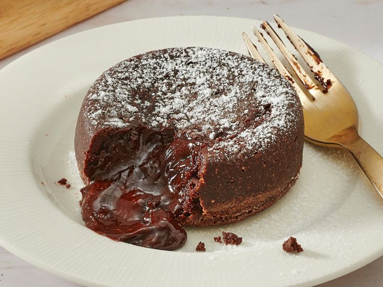

Lava Cake
Home

This decadent lava cake is the perfect chocolate dessert for company or a sweet treat for any occasion.
ingredients
- 6 ½ (1-ounce) squares semisweet chocolate, finely chopped
- ½ cup butter, cut into 8 pieces
- 3 large eggs, room temperature
- ⅓ cup white sugar
- 2 tablespoons all-purpose flour
- 4 teaspoons unsweetened cocoa powder
- 1 pinch salt
Steps
- Preheat the oven to 400 degrees F (200 degrees C). Grease and flour four 6-ounce ramekins.
- Place chocolate and butter in the top of a double boiler over simmering water; heat and stir frequently, scraping
down the sides with a rubber spatula to avoid scorching, until mixture is melted, about 5 minutes.
- Beat eggs and sugar in a large bowl with an electric mixer until pale and thick, about 5 minutes. Mix in chocolate
mixture, flour, cocoa powder, and salt until combined. Pour batter into the prepared ramekins; place on a baking tray.
- Bake in the preheated oven until the sides are set but the middle is still jiggly, 10 to 13 minutes. Cool for 5 minutes
before serving.